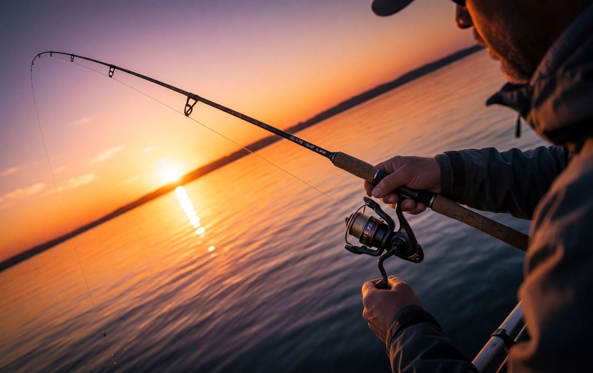
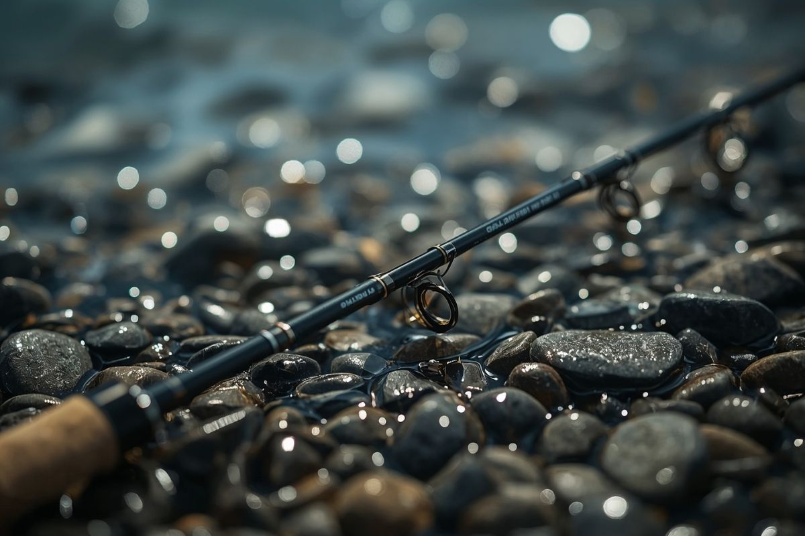
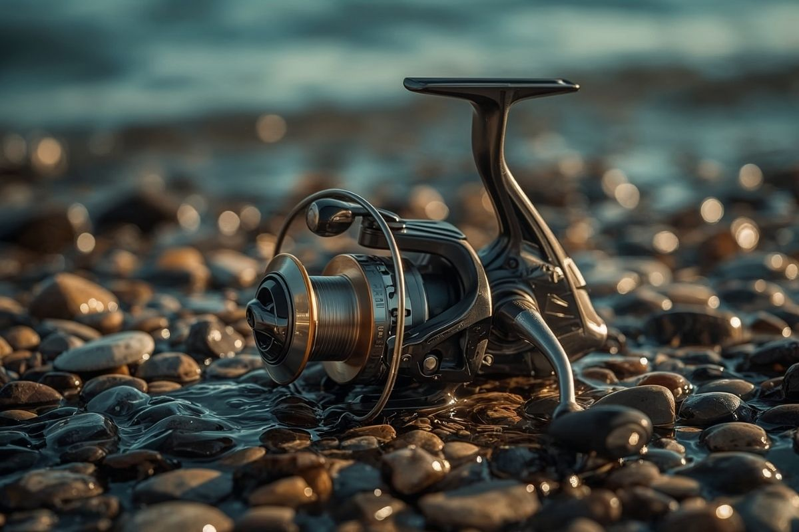
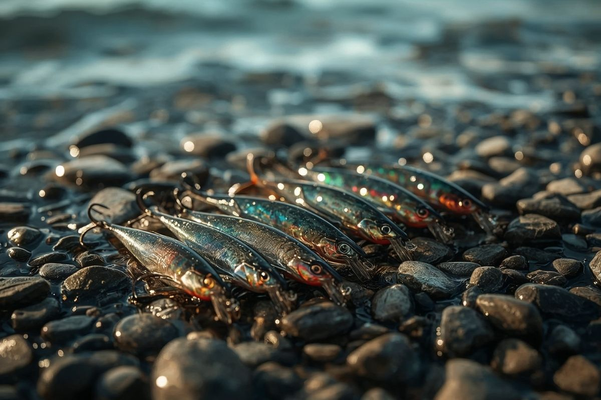
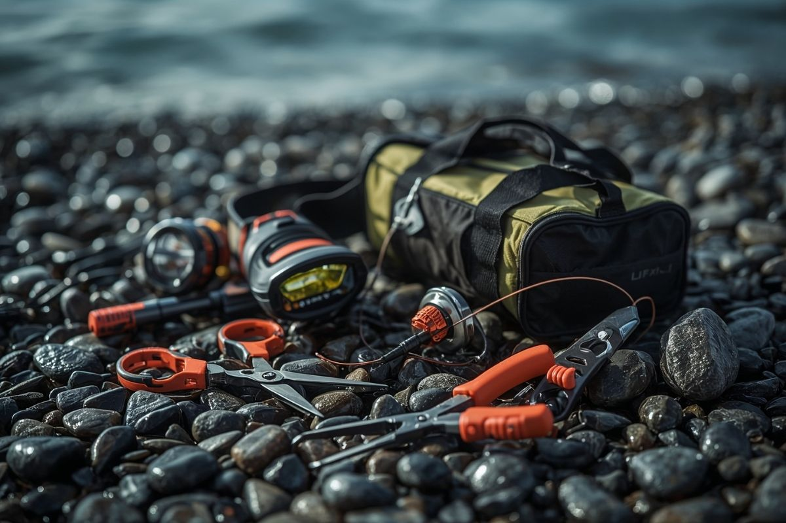

Türkiye'nin en kapsamlı LRF rehberi. Malzemeleri tanı, teknikleri öğren ve denize çık.

LRF, İngilizce Light Rock Fishing kelimelerinin baş harflerinden oluşan, Türkçeye "Hafif Kaya Balıkçılığı" olarak çevrilebilen, Japonya kökenli, ultra hafif (0.5 - 10g av ağırlığı arası) narin kamışlar, ince ipler and mikro yemlerle kıyıdan yapılan bir at-çek avcılık disiplinidir. Yüksek hassasiyet and aksiyon üzerine kuruludur.

LRF kamışları genellikle 1.8 - 2.4 metre uzunluğunda, hafif ve hassas yapıdadır. İnce misina ve küçük maketlerle uyumlu olması için özel olarak tasarlanmıştır. Atış hassasiyeti and balık hissini doğrudan etkiler.

Spinning makine, LRF'nin vazgeçilmez parçasıdır. 1000 - 2500 numara arası makineler bu set için uygundur. İyi bir fren sistemi and hafif yapı, uzun süreli balıkçılıkta yorgunluğu azaltır.

Soft plastik maketler, metal jig'ler and küçük spinner'lar LRF'nin temel yemleridir. Renk and boyut seçimi, avlanılan balık türüne and su koşullarına göre değişir.

Flaşörlü klipsler, narin balıkçı penseleri, trofe tutucular and mikro yem kutuları av esnasında hızınızı and konforunuzu artırır. Küçük dokunuşlar, büyük trofeleri kıyıya hasarsız almanızı sağlar.
Olta, makara, misina ve maket seçimini öğren. Doğru ekipman, başarılı bir balıkçılığın temelidir.
Atış teknikleri, maket kullanımı ve balık davranışlarını anla. Pratik yaparak gelişirsin.
Doğru noktayı seç, sabırlı ol ve keyfini çıkar. Her atış yeni bir deneyimdir.
Malzeme Rehberimizle ekipmanını seç, Başlangıç Rehberi ile ilk atışına hazırlan.